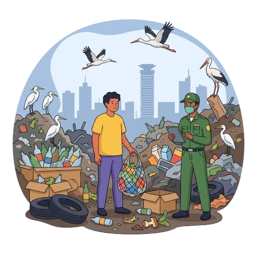

Project Title: Nairobi Waste Action
Residents living in densely populated areas (like Kibera) in Nairobi with non-existent or faulty garbage collection systems are struggling to safely manage and dispose of their daily household waste because public municipal collection services are severely inadequate, while formal private collection services remain financially out of reach for average households. Research evaluating solid waste infrastructure in Nairobi found that the city generates between 2,400 and 3,000 tons of waste daily, yet public and formal private services collect less than 45% of this total—leaving over 1,300 tons of unmanaged waste accumulating in residential estates every day, while 93% of formally collected waste is dumped untreated into landfills due to cost and infrastructure barriers. UNEP & NEMA—Solid Waste Strategy (2021); CET—Plastic Flow Assessment (2025). Residents therefore experience severe health and environmental hazards continuously but are forced to respond by burning trash along walkways or dumping waste into open drains rather than connecting with accessible, affordable collection solutions.
Why this matters
Nairobi generates over 2,400 tons of solid waste daily, leaving more than 1,300 tons uncollected in illegal dumpsites and waterways.
